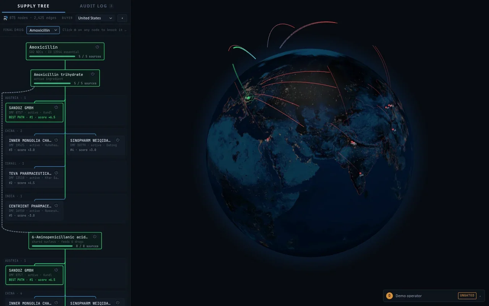

RIPPLE: AI-Powered Vertical Supply Chain Management for Medicine
mapping the hidden single points of failure in the medicine supply chain
- project
- 04 of 05
- event
- DNHacks 2026
- credit
- Built over one weekend at DNHacks 2026 with four teammates.
- links
- Showcase → Source →
01the problem
- most medicines depend on ingredients from a handful of overseas factories
- six antibiotics that look diversified trace back to one shared precursor
- if that factory stops, all six run short at once
02the graph and the risk model
- public FDA registers pulled into one graph of 1,732 nodes and 3,425 edges
- failure spreads through the graph by breadth first search with a redundancy rollup
- an L2 regularized logistic model scores which plant fails next, from nine leakage free features
- raw scores recalibrated so a displayed percentage matches observed frequency

03rerouting and the sensor
- switch off any factory and watch the disruption propagate
- replacement suppliers ranked on capability, geography and their own risk
- each checked against Trade Agreements Act and Defense Department restrictions
- an ESP32 sensor streams cold chain telemetry and computes mean kinetic temperature

04results
- model reached 0.814 AUC against a 0.70 baseline, beating it on all three time cutoffs
- gradient boosting was tested and lost at 0.641, so the transparent model is also the accurate one
- supplier name matching scored 100 percent on a labeled benchmark
- covers 1,706 of 1,732 nodes, and the 26 it cannot resolve are left blank deliberately